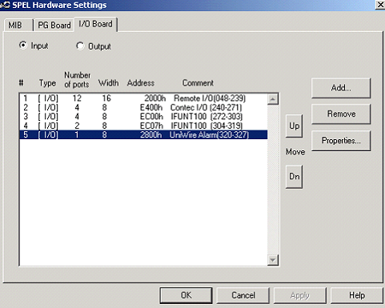
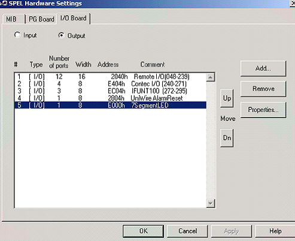

Service History
Subject: W0715 Tester interface control abnormal when Index Arm 1 at socket
Handler Model: NS-7080W(S/N: 121040, NS7KW-06)
Controller: RC520
Date: 25 Aug 2010
Symptom
Customer informed handler encountered W0715 Tester interface control abnormal.
Error message:The abnormal of hardware occurred.
Please confirm the power supply of PC.
Remedy message: Noise and voltage decline by, the tester interface circuit of action abnormal occurred. Please confirm the condition of FAPC power supply DC5V
Action
26 Aug 2010
Checking by dummy tester(HP Compaq notebook) through GPIB interface(Handler slave address 0, Tester address 1), error W0715 Tester Interface control Abnormal occurred
-change to different setup file also same error
-reload loader.exe for tester I/F driver(Hex file), same error
-use dummy tester GPIB tester I/F check with NS-8080W, ok
-swapped to a repaired IFUNT card in RC520 with reload tester I/F driver, same error
-swapped another new IFUNT card with reload Tester I/F driver, same error
-swapped Tester I/F board at rear-left of handler, same error
-In SPEL, use Output I/O bit to trigger test site bin, able to communicate with dummy tester
-swapped to another PCI slot for IFUNT card, same error
-5Vdc checking by HMutility in C:\NS7000\Tool folder, measure at 4.91V, voltage ok
-uncheck 5Vdc monitoring also same error
-replaced to 400W power supply in RC520, same error
-replaced to a 3.5¡± HDD(WD 160GB, did recovery with Recovery by EasyRestore Ver 1.0, took almost an hour for recovery(surpisingly able to use EasyrRestore on HDD capacity larger than 40GB)
Wrong Recovery CD(ver 1.2) prepared by EPSON-T
This RC520 uses CPU Board SPI-6941 with C-864 x03pcs of PG Board on ISA slots, other RC520 in Xilinx uses only 1 pc of C-873 PG Board
27 Aug 2010
-after recovery, PC hang-mouse cannot move, MMI shows executing spel with NS-taskbar
-replace to another 2.5¡± HDD, did software Recovery, also PC hang-mouse cannot move, MMI shows executing spel with NS-taskbar
-checked Windows 2000 Device Manager resouces setting(Input/Output Range) for IFUNT100, PC I/O 32 & PC I/O 64, MIB1, MIB2, MIB3, PG1, PG2 and PG3. Found some Input/Output Range not the same as in SPEL Hardware I/O Board Address range
-launch C:\PSPELWORK\exe\HWconfe.exe, change the Input/output range in SPEL same as Windows 2000,
-add 7SegmentLED for PC I/O 64 in SPEL Output
-MMI able to launch, SPEL & MMI version up, restore system data & pos
-run handler but still encounter W0715 Tester interface control abnormal
-disconnect all cables from connection ports of IFUNT card at RC520 also same error
will replace backplane board in RC520 next week from TR60 in office
30 Aug 2010
-Replaced with RC520(from NS-6040 in office), only with backplane, 300W power supply, IFUNT100 card
-Install rest of the cards such as MIBs, PG to this RC520
-Boot up handler, same error W0715 Tester Interface control Abnormal occurred
-checked IFUNT100 address for Windows 2000 Resources hardware settings upper address was used and not address (EC00-EC1F) (Lower address) does not match SPEL software IFUNCT100 address
-set SPEL I/O Input address for IFUNT100 as EC00
-restart MMI, able to communicate and do bining with GPIB dummy tester
-swapped cards back to original RC520
-conversion to FT256 17x17 Quad
-alignment check in Hot 85DegC
-release handler to production
Cause
Wrong SPEL I/O Input address for IFUNT100 that do not match IFUNT100 address for Windows 2000 Resources hardware settings upper address caused error W0715 Tester Interface control Abnormal.
In this case IFUNT100 address for Windows 2000 Resources hardware settings upper address is EC00 so SPEL I/O Input address for IFUNT100 as EC00 is correct.
Remarks
Recovery CD by EPSON is for standard NS-7000 series.
Automat is an option which include Bin display on Automat, 7SegmentLED is an output using PC I/O 64 card.
Therefore, after Recovery need to add Contec I/O 64 card 7SegmentLED in SPEL I/O Output.
IFUNT100 Input/Output Range EC00 - EC1F(Higher Address).
Contec PIO-32/32L(PCI) Input/Output Range E400
Contec PIO-64/64L(PCI) Input/Output Range E000
|
 |
 |
Backplane is Contec MB-PCI14/9(PC) for NS-7000 which is also use in NS-6000.
Backplane is Contec BPI-1411 for NS-8000.